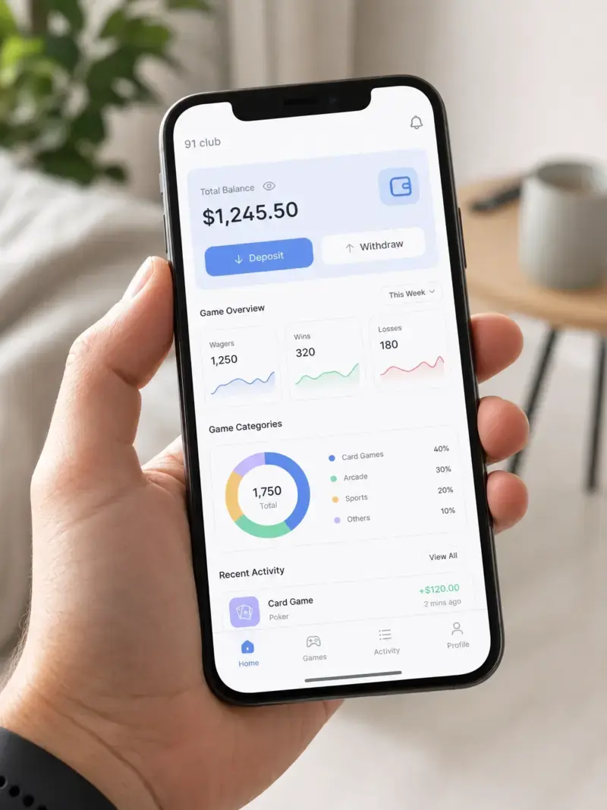
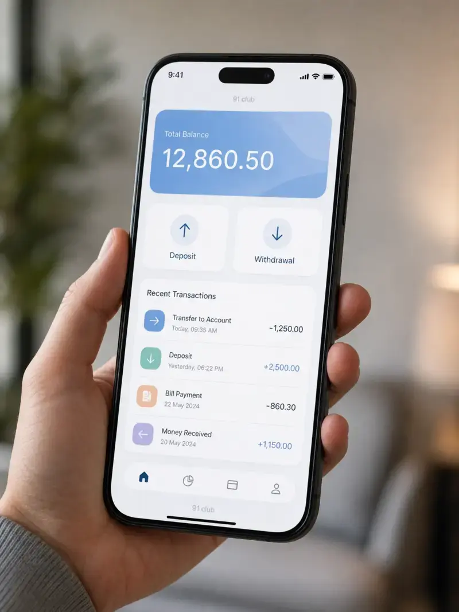
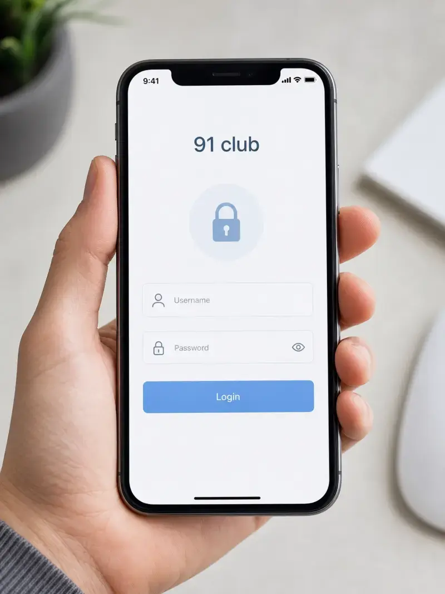

91 Club: Complete Guide, Features, Earning Methods, and Safety Review (2026)
Introduction
91 Club is an online gaming platform that offers reward-based activities through a mobile application. Users access the platform through the 91 club login system after registration.
The app has gained attention due to its earning claims and simple interface. Many users search for ways to join, play games, and understand how the system works.
91 Club combines gaming features with a digital wallet system. It includes options like colour prediction, lottery-style games, and referral rewards.
Users expect two main outcomes from this platform. First, they want entertainment through mobile gaming. Second, they look for ways to earn money using in-app activities.
Search trends show strong interest in topics like account login, withdrawal process, and earning methods. Many users also question if the platform is safe or reliable.
Before using any such app, users should understand its structure, risks, and limitations. Clear knowledge helps users make informed decisions and avoid common issues.
Quick Links: About Us | Contact Us | Privacy Policy | Disclaimer
What is 91 Club?
Platform Overview
91 Club is a mobile-based platform that combines gaming with a reward system. Users create an account and access features through the 91 club login page.
The platform uses a simple interface designed for quick navigation. It includes a user account system, digital wallet, and basic dashboard controls.
Most users interact with games and earning features inside the app. The system tracks activity, rewards, and transactions in one place.

How It Works
Users start by completing registration and accessing their account through 91 club login. After login, the dashboard shows available games and balance details.
The platform runs on a reward-based model. Users join activities, place entries, and receive results based on outcomes.
The system updates wallet balances based on results. Users can then request withdrawals through the built-in payment system.
Referral programs also play a role. Users can invite others and earn rewards based on activity.
Type of App (Gaming / Earning / Prediction-Based)
91 Club falls under reward-based gaming apps with prediction elements. It includes simple games like colour prediction and number-based activities.
The app also fits into the online earning apps category. Users engage with features that claim to offer financial rewards.
It combines elements of mobile gaming platforms and app-based income systems. This mix attracts users looking for both entertainment and earning options.
Key Features of 91 Club
Account Registration System
91 Club uses a simple account registration system for new users. Users sign up with basic details and create a secure login.
The platform includes a user authentication process to protect account access. Each account connects to a unique user profile.
Users manage account settings, passwords, and personal details from the dashboard. This system supports smooth access to all features.
Games & Earning Options
91 Club offers multiple game types within a single mobile application. These include colour prediction and number-based activities.
Each game follows a fixed structure with defined entry rules. Users participate and receive results based on outcomes.
The platform promotes reward-based gaming through these activities. Earnings depend on results, not guaranteed returns.
Referral & Bonus System
91 Club includes a referral program to expand its user base. Users invite others using a unique invite code.
The system tracks referrals and assigns rewards based on activity. Bonus rewards may appear during promotions or events.
This feature supports app-based earning models and user growth strategies. Users should review terms before using referral features.
Wallet & Transaction System
91 Club provides a built-in digital wallet for managing funds. Users track balances, deposits, and withdrawals in one place.
The wallet connects with a payment gateway for transactions. Users can add funds and request withdrawals through this system.
The platform records transaction history for transparency. Users should check details before confirming any financial action.

How to Register on 91 Club (Step-by-Step)
Sign-up Process
91 Club requires a simple registration process for new users. Open the app and locate the sign-up option.
Enter basic details such as mobile number and password. Some versions may ask for an invite or referral code.
Submit the form and verify your account if required. After verification, the system creates your user profile.
This process connects your account to the platform’s database. You can now access features through your dashboard.
Login Process
After registration, use your credentials to access your account. Enter your mobile number and password on the login page.
The 91 club login system checks your details through user authentication. Once verified, it grants access to your account.
The dashboard displays wallet balance, games, and activity options. Always use correct login details to avoid access issues.

Common Login Issues & Fixes
Users may face login problems due to incorrect credentials. Always check your mobile number and password before retrying.
Forgotten passwords can block access to the account. Use the reset option to create a new password.
App errors can also affect login access. Restart the app or clear cache to fix minor issues.
Network problems may delay the login process. Ensure a stable internet connection before trying again.
If issues continue, check if the app version is updated. Updated versions often fix login-related bugs.
How to Download 91 Club App
APK Download Process
91 Club usually provides its app as an APK file. Users need to download this file from the official source.
Search for the latest version of the 91 Club APK. Always choose a trusted and updated file to avoid errors.
Check file size and version details before downloading. This step helps ensure compatibility with your device.
Android Installation Steps
After downloading, locate the APK file in your device storage. Tap the file to begin installation.
Enable “Install from unknown sources” in device settings if required. This option allows manual app installation.
Follow on-screen instructions to complete the setup. Once installed, open the app and access your account.
Is It Available on Play Store or Not
91 Club is usually not available on the Google Play Store. Most users install it through direct APK download.
This method gives access to the latest version of the app. Users should always verify the source before installation.
Avoid outdated or modified files, as they may cause issues. Safe installation ensures better app performance and security.
How to Use 91 Club (Beginner Guide)
Dashboard Overview
91 Club shows a simple dashboard after login. The screen displays wallet balance, games, and account options.
Users can access the digital wallet, transaction history, and profile settings. The interface supports quick navigation across features.
The dashboard also highlights active games and available rewards. Notifications may show updates or bonus offers.
How to Start Playing
Select a game from the main dashboard. Each option shows basic rules and entry requirements.
Choose an activity such as colour prediction or number-based games. Enter the required amount and confirm participation.
The system processes your entry and shows results after each round. Earnings depend on outcomes, not fixed returns.
Always review game rules before starting. This step helps avoid confusion during gameplay.
Understanding Features
91 Club includes several built-in features for user interaction. These include the referral program, bonus rewards, and wallet system.
The referral system allows users to invite others using a unique code. Rewards depend on user activity within the platform.
The wallet system manages deposits and withdrawals. Users should check transaction details before confirming actions.
Understanding these features helps users navigate the platform more effectively. Clear usage reduces common mistakes and confusion.
How to Earn Money from 91 Club
Games (Colour Prediction, Lottery, etc.)
91 Club offers reward-based games inside the mobile platform. Common options include colour prediction and number-based activities.
Each game follows fixed rules and time-based rounds. Users enter a value and select an outcome before results appear.
The system updates results automatically after each round. Earnings depend on correct selections, not guaranteed returns.
Users should review game rules before participation. Clear understanding reduces confusion and mistakes.
Referral Income
91 Club uses a referral program to reward user growth. Each account receives a unique invite code.
Users share this code to invite new members. The system tracks activity linked to each referral.
Rewards depend on the actions of invited users. Active referrals can increase earning potential over time.
Users should check referral terms before sharing codes. This helps avoid misunderstandings about rewards.
Bonuses & Rewards
91 Club provides bonus rewards through promotions and system events. These may include sign-up bonuses or activity-based rewards.
The platform may offer limited-time offers to increase engagement. Users can access these through the dashboard.
Bonus rewards often depend on specific conditions. Users should read all requirements before claiming any reward.
Tracking rewards in the digital wallet helps manage earnings. Clear records improve financial control within the app.
Withdrawal Process in 91 Club
How to Withdraw Money
91 Club provides a withdrawal option through its digital wallet system. Users open the wallet section from the dashboard.
Select the withdrawal option and enter the amount. Choose a payment method linked to your account.
Confirm the request after checking all details. The system processes the request through its payment gateway.
Users should verify account details before submitting. Incorrect information may delay the process.
Minimum Withdrawal Limits
91 Club applies minimum withdrawal limits for each request. Users must meet this limit before submitting a request.
The platform shows the minimum amount inside the wallet section. Limits may vary based on account activity or region.
Always check the current requirement before planning a withdrawal. This helps avoid rejected requests.
Withdrawal Time
91 Club processes withdrawal requests within a specific time frame. Processing time depends on system load and payment method.
Some requests complete within hours, while others may take longer. Users can track status inside the transaction history.
Delays may occur during high activity periods. Checking status regularly helps track progress.
Common Withdrawal Issues
Users may face issues like pending requests or delays. Incorrect account details often cause failed transactions.
Low balance below the minimum limit can block withdrawals. Always confirm available balance before submitting.
Technical errors may also affect processing. Updating the app can fix some system-related issues.
If a request stays pending, review transaction details. Accurate information improves successful processing.
Is 91 Club Real or Fake?
Trust Analysis
91 Club operates as a reward-based mobile platform with gaming features. Users interact through an account system and digital wallet.
The platform provides basic functions like registration, gameplay, and withdrawals. However, earning results depend on outcomes, not fixed returns.
No platform can guarantee consistent income through prediction-based games. Users should approach such systems with realistic expectations.
Clear terms and conditions improve trust, but users must review them carefully. Understanding rules helps avoid confusion.
User Concerns
Many users question if 91 Club is safe and reliable. Common concerns include withdrawal delays and account access issues.
Some users report problems with deposits or pending transactions. These issues often relate to incorrect details or system delays.
Users also worry about data privacy and account security. Strong passwords and careful usage reduce risks.
Search trends show high interest in safety and reliability questions. This indicates user hesitation before joining.
Transparency Discussion
91 Club provides limited public information about its operations. This can make it harder for users to fully assess reliability. The platform explains basic features but lacks detailed disclosures. Users should rely on verified information within the app. Transparency improves trust in any digital platform. Users should stay cautious when information remains unclear. Checking transaction history and activity helps monitor account performance.
Is 91 Club Safe and Legal?
Safety Risks
91 Club involves financial activity through a digital wallet system. Any platform with money transactions carries some level of risk.
Users may face issues like delayed withdrawals or failed deposits. These often relate to system errors or incorrect account details.
Prediction-based games also carry outcome risk. Earnings depend on results, not guaranteed returns.
Users should set limits before using such platforms. Controlled usage helps reduce financial risk.
Data and Privacy Concerns
91 Club requires personal details during account registration. This may include mobile number and basic profile data.
The platform stores user data within its system. Users should avoid sharing sensitive information beyond required fields.
Strong passwords improve account security. Regular updates also help protect user access.
Users should review app permissions before installation. Limiting access reduces unnecessary data exposure.
Legal Status (General Overview)
91 Club operates as a mobile-based gaming and earning platform. Legal status may vary depending on local regulations.
Some regions allow reward-based gaming apps under specific rules. Others may apply restrictions on similar platforms.
Users should check local laws before using such apps. Understanding regulations helps avoid legal issues.
No platform can override regional compliance requirements. Users remain responsible for following applicable rules.
Pros and Cons of 91 Club
Advantages
- 91 Club offers a simple mobile interface for easy navigation. Users can access games and wallet features from one dashboard.
- The platform includes multiple game options within a single app. This gives users variety in gameplay and activity.
- The referral program allows users to earn rewards through invites. This supports app-based earning models.
- The digital wallet system helps manage deposits and withdrawals. Users can track transactions in real time.
- Quick registration and account setup save time for new users. The process requires basic details only.
Disadvantages
- 91 Club does not guarantee consistent earnings from games. Results depend on outcomes, which carry risk.
- Users may face delays in withdrawal processing. System load or incorrect details can affect transactions.
- Limited transparency about operations may raise concerns. Users may not find complete public information.
- The app requires manual APK installation in many cases. This can create confusion for some users.
- Technical issues like login errors or app crashes may occur. Regular updates may not fix all problems.
Common Problems & Solutions
Login Not Working
91 Club users may face login issues due to incorrect credentials. Always check mobile number and password before retrying.
Clear app cache to fix temporary system errors. Restart the device if the issue continues.
Ensure a stable internet connection during login. Weak networks can block account access.
Update the app to the latest version. New updates often fix login-related bugs.
Deposit Not Received
Some users report deposits not showing in the wallet. This often happens due to payment gateway delays.
Check transaction status in your payment method first. Confirm that the payment completed successfully.
Wait for system processing time before taking action. Delays may occur during high activity periods.
Verify entered details before making a deposit. Incorrect information can cause failed transactions.
Withdrawal Delays
91 Club withdrawal delays can occur due to system load or verification checks. Always review request details before submitting.
Check minimum withdrawal limits before making a request. Requests below limits may not process.
Track status through the transaction history section. This helps monitor progress clearly.
Avoid multiple requests at the same time. This can slow down processing speed.
App Not Opening
91 Club app may fail to open due to outdated versions or device issues. Install the latest version of the app.
Clear storage space if the device runs low on memory. This improves app performance.
Restart the device to refresh system processes. This often resolves minor app errors.
Check app permissions in device settings. Proper permissions ensure smooth functionality.
Real Experience & Risk Analysis of 91 Club
What Happens When You Actually Use It (Realistic Expectations)
91 Club provides a structured system with games and reward-based activities. Users interact through a dashboard and digital wallet.
Gameplay follows fixed rounds with defined rules. Results depend on outcomes, not user control.
Earnings may occur, but they vary based on activity and results. No system guarantees steady income.
Users often spend time learning game patterns and features. Understanding the platform improves decision-making.
Risk vs Reward Breakdown
91 Club combines potential rewards with outcome-based risk. Each activity involves uncertainty in results.
Small rewards may occur in short sessions. Losses can also happen due to incorrect selections.
The platform operates on a probability-based model. Users should balance expectations before participation.
Managing wallet balance helps control risk exposure. Planned usage reduces sudden losses.
Why Most Users Lose Money (Behavior Insight)
Many users focus on quick earnings instead of strategy. This leads to repeated losses over time. Lack of understanding about game rules increases mistakes. Skipping basic learning creates poor decisions. Frequent entries without limits reduce overall balance. Controlled activity helps avoid this issue. Chasing losses often leads to more spending. This behavior increases financial risk within the platform.
Honest Verdict (Not Hype-Based)
91 Club works as a reward-based gaming platform with mixed outcomes. It offers both opportunities and risks.
Users should treat it as an entertainment-based system, not a fixed income source. Clear expectations improve experience.
Understanding features, limits, and risks is essential before use. Informed decisions lead to better control and safety.
Alternatives to 91 Club
Other Earning Apps
Several online earning apps offer reward-based activities similar to 91 Club. These platforms use mobile interfaces with simple user dashboards.
Common features include referral programs, daily tasks, and bonus rewards. Users complete activities to receive small incentives.
Some apps focus on surveys, app testing, or task completion. These models reduce dependence on prediction-based outcomes.
Users should review app features, payment systems, and user feedback before joining. Clear research improves platform selection.
Safer Alternatives
Safer options focus on task-based or skill-based earning systems. These include freelance platforms, microtask apps, and digital services.
Task-based apps offer predictable structures with defined rewards. Users complete work and receive fixed compensation.
Skill-based platforms allow users to earn through services like writing or design. These models provide more control over outcomes.
Users should choose platforms with clear policies and transparent systems. Verified payment methods improve trust and reliability.
FAQ Section
What is 91 Club and how does it work?
91 Club is a mobile-based gaming and reward platform. Users register, access the dashboard, and join games or activities. The system updates results based on outcomes. Earnings depend on participation and results.
Is 91 Club real or fake?
91 Club functions as an active online platform with gaming features. However, earning results are not guaranteed. Users should review features, risks, and policies before using it. Careful use helps avoid misunderstandings.
How to earn money from 91 Club?
Users earn through games, referral programs, and bonus rewards. Activities like colour prediction and invites generate potential rewards. Earnings depend on outcomes and user activity. No fixed income system exists.
How to withdraw money from 91 Club?
Users open the wallet section and select the withdrawal option. Enter the amount and confirm payment details. The system processes the request through its transaction system. Status updates appear in transaction history.
Why is 91 Club not working today?
The app may face issues due to server load or technical errors. Outdated versions or weak internet can also cause problems. Restarting the app or updating it often resolves issues. Checking connection stability also helps.
Is 91 Club safe to use?
91 Club involves financial activity, so some risk exists. Users should protect accounts with strong passwords and avoid sharing sensitive data. Reviewing permissions and using verified details improves safety. Responsible use reduces risks.
How long does 91 Club withdrawal take?
Withdrawal time depends on system processing and payment method. Some requests complete within hours, while others take longer. High activity periods may cause delays. Users can track progress in transaction history.
How to download 91 Club APK?
Users download the APK file from a trusted source. After download, install it through device settings. Enable unknown sources if required for installation. Always check file version before installing.
Final Verdict
Summary
91 Club operates as a mobile gaming and reward-based platform. It combines prediction games, referral systems, and a digital wallet.
The platform offers simple access and multiple activity options. However, outcomes depend on results, not guaranteed returns.
Users should understand features, risks, and limitations before using it. Clear knowledge helps avoid common mistakes.
Who Should Use It
Users interested in mobile gaming platforms may explore 91 Club. It suits those who want entertainment with reward-based features.
People who understand outcome-based systems can use it with control. Managing wallet balance helps reduce risk.
Users who follow platform rules and limits can navigate it better. Responsible usage improves overall experience.
Who Should Avoid It
Users looking for stable or fixed income should avoid 91 Club. The platform does not provide guaranteed earnings.
People unfamiliar with prediction-based systems may face confusion. Lack of understanding increases risk of loss. Users who prefer fully transparent platforms may find limitations. Careful evaluation helps decide suitability.